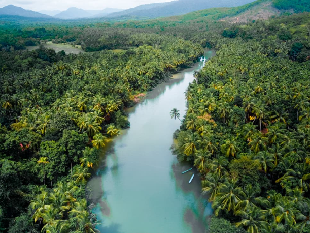

Operation Honnavara

Trip Dates: 23rd December till 26th December.
Itinerary
Honnavar is a beautiful coastal town located in the Uttara Kannada district of Karnataka, India. It is known for its pristine beaches, lush green forests, and rich cultural heritage. Here's an ideal itinerary for 3 days in Honnavar:
Day 0:(23rd December)
- 07:00PM: TT pickup point - Assemble at Silkboard/Koramanagala, Bengaluru .
- Dinner at VV puram food street.a foodie paradise famous as Thindi Beedi, Chaat Road/Street, VV Puram. From North Indian chat items to South Indian healthy delicacies, this food streets caters from each corner of India and serve only vegetarian food items.
- Start the journey from Bengaluru towards Honnavara.
Day 1:(24th December)
- Reach the homestay by 9AM, get freshup and have breakfast.
- Start your day with a visit to the Sharavathi Backwaters. You can take a boat ride and enjoy the scenic beauty of the backwaters.
- Next, head to the Apsara Konda Waterfalls. This is a beautiful waterfall surrounded by lush green forests. You can take a dip in the cool waters and enjoy the natural beauty around you.
- In the evening, visit the Honnavar Beach. This is a beautiful beach with golden sand and clear blue waters. You can relax on the beach, watch the sunset, and enjoy some local snacks.
Day 2:(25th December)
- Start your day with a visit to the Murudeshwar Temple. This is a famous temple dedicated to Lord Shiva and is located on the coast of the Arabian Sea. The temple is known for its towering statue of Lord Shiva and the beautiful architecture.
- Next, head to the Murudeshwar Beach. This is a beautiful beach with clear blue waters and golden sand. You can relax on the beach, take a dip in the sea, and enjoy some local snacks.
- In the noon, visit the Netrani Island. This is a beautiful island located off the coast of Honnavar. You can take a boat ride to the island and enjoy some snorkeling and scuba diving.
Day 3:(26th December)
- Vacate the homestay and start towards Jog falls.. Joga Falls is the second highest plunge waterfall in India located in Siddapura taluk Uttara Kannada district. It is a segmented waterfall which, depending on rain and season, becomes a plunge waterfall.
- Reach Bengaluru by 10PM
Confirm Members.
- Santhosh Gowda.
- Rakesh.
- Rakesh's Sister.
- Kanchana.
- Aparna.
- Ananda.
- Reddy pappi Naidu.
- RP's wife.
- Bhargava.
Tentative members.
- Arunesh family.
- Swaroop.
- Abhi.
- Poornima.
- Sandhya.
Join the Whatsapp group.Click here
Homestay, Travel and contact details.
- Homestay/resort. Check
- Travel TT.click
- Contact details for any query related to plan.contacts